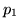
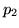
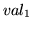
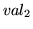
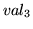
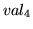
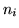
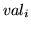
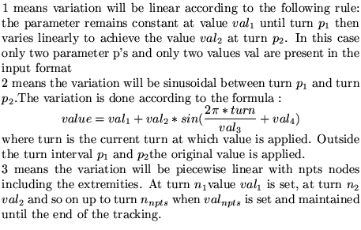

Input format:
ADIAbatic variations of some parameters(up to 80 char)
name pkeyw nopt ,,,,,
........
name pkeyw nopt ,,,,,
99,
if nopt=3 then after nopt enter the following :
npts , for i=1 to npts
Parameter definitions :Examples
name name of element having a parameter to be varied
pkeyw keyword of parameter to be varied (i.e. k1 for a quad strength)
nopt option number

The following are two examples extracted from demo 13. The first varies the frequency of the cavities named cav and cav1 from turn 100 to turn 200 in a linear fashion between the harmonic number 336 and 336.01. The second varies the voltage of cavity cav. Refer to demo 13 to see what is done with this set up.
adiabatic variation of RF frequency cav freq 1 100 200 336 336.01 cav2 freq 1 100 200 336 336.01 99, adiabatic variation of RF voltage cav volt 1 10 50 25 70 99,